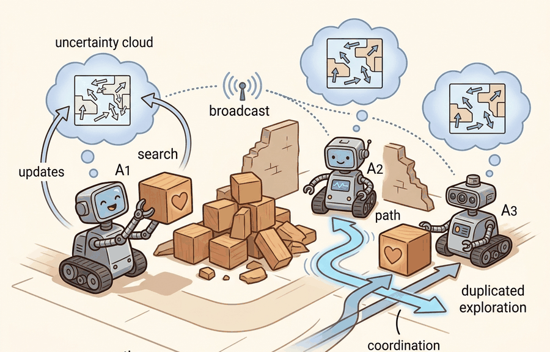

"We shared beliefs, bandwidth, and one very duplicated hallway."
A Search Team With Local Maps

Multi-agent search and rescue gives Capstone Projects a concrete systems role: assign roles, communications, belief sharing, and deconfliction before optimizing policies. The section keeps asking what the agent observes, what it remembers or updates, which action changes, and what evidence would convince a skeptical reader.
This section develops the technical contract for multi-agent search and rescue into a usable mental model. First we define the object of study, then we connect it to the agent loop, then we test it with a compact implementation.
The key question in Multi-agent search and rescue is practical: what must the agent know, what can it observe, what action is available, and what evidence shows that the action worked under the stated conditions?
Multi-agent search and rescue should be judged by the action it improves. A section claim is strong when it names the decision, the measurement, and the failure mode before a larger model or simulator is introduced.
Theory
For Multi-agent search and rescue, the practical design rule is to make the interface inspectable before optimization begins: inputs, outputs, units, latency, bounds, and failure labels should all be visible in the saved artifact.
The mechanism in Multi-agent search and rescue is the contract between representation and action. Name what enters the module, what leaves it, which assumptions make that transformation valid, and which log would reveal a bad handoff.
Worked Example
For Multi-agent search and rescue, keep one concrete rollout in view. A sensor reading becomes an estimate, the estimate constrains an action, the action changes the world, and the next observation confirms or contradicts the assumption. The section's idea is useful only if it improves that loop.
Use PettingZoo, MPE-style simulators, ROS 2 multi-robot namespaces, or a fleet simulator with synchronized logs. The preserved fields are agent ID, local observation, message, belief update, assigned region, conflict resolution, and rescue success predicate.
Practical Recipe
- Write the observation, action, and success metric before choosing a model.
- Build a baseline that is simple enough to debug by inspection.
- Add the library implementation only after the baseline behavior is understood.
- Record failures as structured cases: perception error, state error, planning error, control error, or evaluation error.
- Run at least one perturbation test before trusting the result.
The common mistake in Multi-agent search and rescue is to trust a component score before checking the closed-loop interface. The failure usually appears where state, timing, authority, or evaluation context crosses a module boundary.
A team using Multi-agent search and rescue starts by writing the task panel, not by picking the largest model. They keep a baseline run, a maintained-tool run, and a perturbation run in the same result folder. The comparison is accepted only when the action trace, metric, and failure labels come from one script.
A good embodied system makes multi-agent search and rescue visible twice: once in the design sketch and once in the replay artifact. The second view keeps the first one honest.
For Multi-agent search and rescue, the open research question is not whether a larger policy can produce a better demo. The sharper question is whether the method improves reliability across new scenes, new embodiments, delayed feedback, and rare failures under an evaluation protocol that another lab can reproduce.
For Multi-agent search and rescue, can you name the observation, action, protected assumption, success metric, and one likely failure case? If any field is vague, rewrite the contract before adding model complexity.
Topic-Native Deepening
Multi-agent search and rescue is an excellent advanced capstone because it forces students to reason about communication, deconfliction, and shared belief rather than only about single-agent competence. Team performance can improve dramatically, or collapse, depending on bandwidth and stale maps.
The project should therefore define what is shared, when it is shared, and how stale information is handled. Without that, multi-agent behavior becomes a story about many animated robots rather than a controlled systems experiment.
Multi-agent search and rescue becomes teachable once the student can state the operative variables, the decision boundary, and the evidence artifact. The section should therefore be read together with Chapter 47 on aerial agents and Chapter 30 on navigation, where the same loop is developed from adjacent angles.
Let each agent $i$ carry belief $b_t^{(i)}$ and share messages $m_t^{(i\rightarrow j)}$. Team objective can be written as $\max \mathbb{E}\left[\sum_t r_t^{team} - \lambda \sum_{i,j}\text{comm\_cost}(m_t^{(i\rightarrow j)})\right]$, so communication is useful only when the information gain exceeds the bandwidth cost.
This objective keeps the project honest about communication. Unlimited messaging can hide poor coordination design, while zero messaging can make the team duplicate work. The capstone should explore that tradeoff explicitly.
- Define the disaster map, victim model, communication budget, and role assignments.
- Implement a non-communicating or centrally scripted baseline.
- Add belief sharing or task allocation under explicit bandwidth limits.
- Evaluate team success, duplicate coverage, communication load, and rescue latency together.
- Submit one replay where stale information caused a coordination failure.
| Dimension | What To Specify | Why It Matters |
|---|---|---|
| Role policy | Scout, carrier, mapper, relay, or symmetric team | Defines what each agent is trying to optimize. |
| Communication protocol | Periodic, event-driven, or uncertainty-triggered sharing | Shapes bandwidth use and coordination quality. |
| Map update policy | How local beliefs become shared beliefs | Controls stale-information risk. |
| Evidence | Coverage map, message log, and victim timeline | Shows whether teamwork really helped. |
def validate_card(payload: dict[str, object]) -> dict[str, object]:
assert payload, "payload must not be empty"
return payload
# Multi-agent SAR evidence card.
card = {
"agents": 4,
"bandwidth_kbps": 80,
"rescues": 7,
"duplicate_room_entries": 3,
"stale_map_failure": True,
}
print(validate_card(card)){'agents': 4, 'bandwidth_kbps': 80, 'rescues': 7, 'duplicate_room_entries': 3, 'stale_map_failure': True}The expected output should expose both coordination success and waste. Duplicate room entries are not trivia; they show whether the shared-belief protocol is paying for itself.
After the from-scratch contract is clear, the practical route uses PettingZoo, ROS 2, Habitat, AirSim, MARL baselines, centralized logging. The payoff is that standard interfaces, logging, batching, and replay support move from ad hoc glue code into maintained infrastructure, while the evidence schema stays the same.
An effective team project gives each subgroup ownership of one subsystem, such as mapping, allocation, or communications, but still requires one integrated evidence artifact. That mirrors real research collaboration while preserving accountability.
The extension is heterogeneous teaming with drones and ground robots. Once the bodies differ, role allocation and belief fusion become much more interesting than raw policy learning.
For multi-agent search and rescue, the artifact should show whether coordination improved coverage without hiding communication delay, duplicated search, or unsafe conflicts.
- Multi-agent search and rescue matters when it changes an embodied agent's action under a stated observation and metric.
- Assign roles, communications, belief sharing, and deconfliction before optimizing policies.
- Strong evidence is saved as one artifact containing the baseline, the maintained-tool path, the metric panel, and labeled failures.
Design a method-matched experiment for Multi-agent search and rescue. Specify the environment, observation schema, action interface, metric, and one perturbation that targets the section's core assumption.
Section References
Savva, M. et al. Habitat: A Platform for Embodied AI Research. ICCV, 2019.
Use for simulated navigation projects, reproducible scene tasks, and embodied evaluation loops.
Cadene, R. et al. LeRobot: State-of-the-art Machine Learning for Real-World Robotics in Pytorch. GitHub project and technical documentation, 2024.
Use for dataset conversion, policy training, and capstone projects built around open robot-learning workflows.
What's Next?
Next, continue with section-59.11. Carry forward the artifact contract from Multi-agent search and rescue, but change exactly one design axis before comparing results: embodiment, action interface, evaluation panel, or safety risk.